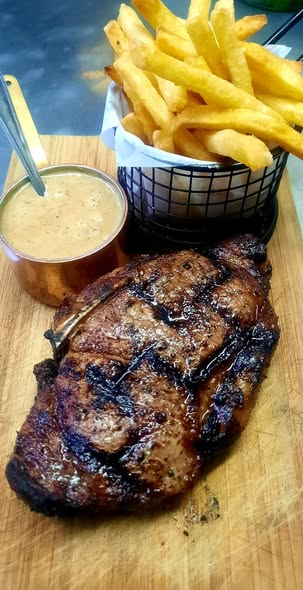
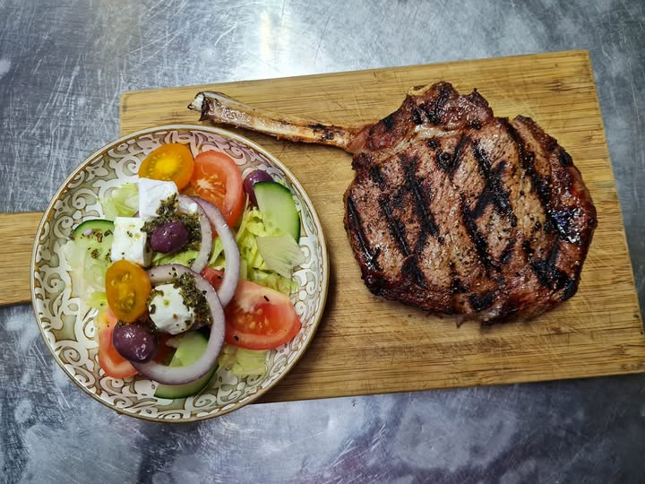
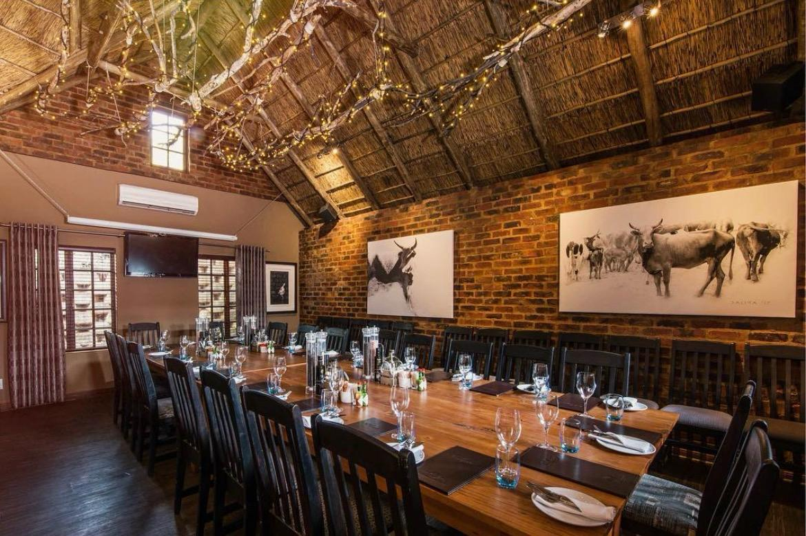
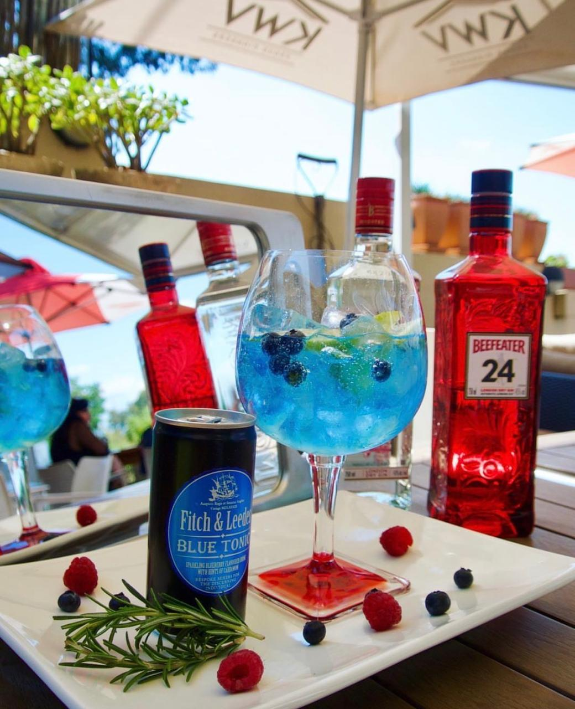
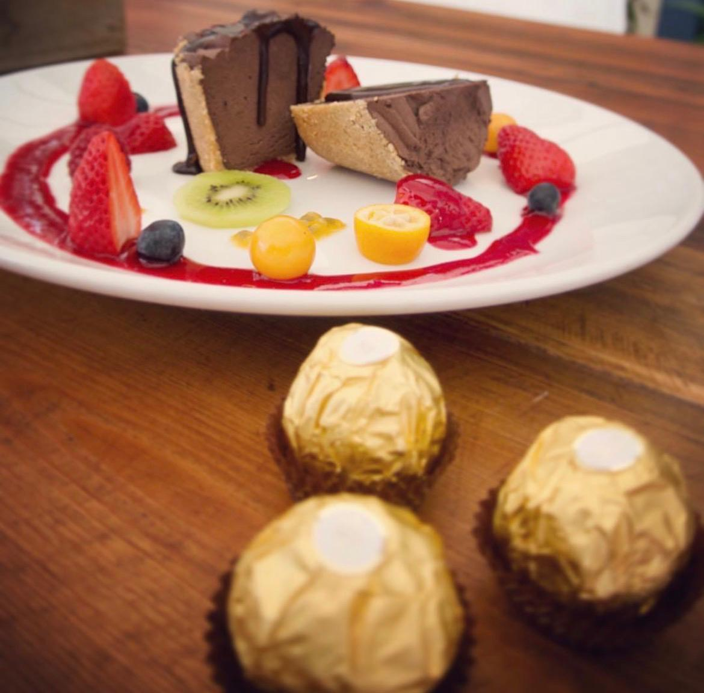
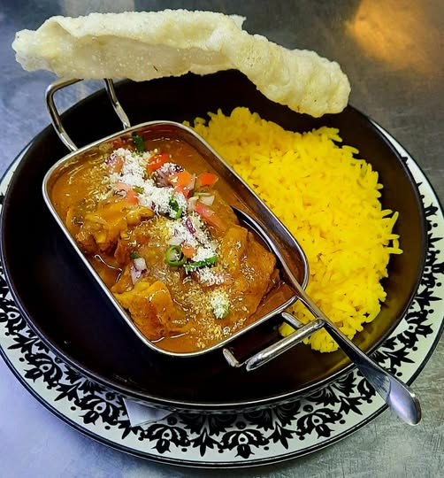

Signature grill
Blu Rump
R229Flame-grilled, topped with roquefort and served with a blue cheese sauce.





Garden restaurant & grill · Waterkloof, Pretoria
Flame-grilled steaks and game, fresh seafood, vibrant salads and a lush gin garden — served with genuine warmth.
A taste of the dishes our guests return for, flame-grilled and prepared fresh to order.

Flame-grilled, topped with roquefort and served with a blue cheese sauce.
Mediterranean lemon butter, fresh basil and a sundried tomato sauce.
Medium-rare, sliced and served with a raspberry and basil jus.

Fragrant Thai curry served with fluffy rice — a long-standing favourite.
Premium gin, blue tonic, fresh berries and rosemary — served over ice.
Served with a berry jus and fresh seasonal berries.
Don't just take our word for it — read what Pretoria diners say about their time at Blu Saffron.
We're easy to find in the leafy suburb of Waterkloof, Pretoria. Reserve ahead — especially for weekend dinners — and let us take care of the rest.
Pretoria, 0181
+27 12 346 0223
Lunch & dinner — please call to confirm hours.
Tucked away on Sidney Avenue, Blu Saffron has become one of Pretoria's most-loved destinations for relaxed, elegant dining — flame-grilled steaks and game, fresh seafood, vibrant salads and sundowners in the gin garden.
Whether it's an intimate dinner, a family celebration or drinks in the garden, settle in, unwind and let us look after you.
More about usBook online in under a minute — we'll confirm your table by phone or WhatsApp.